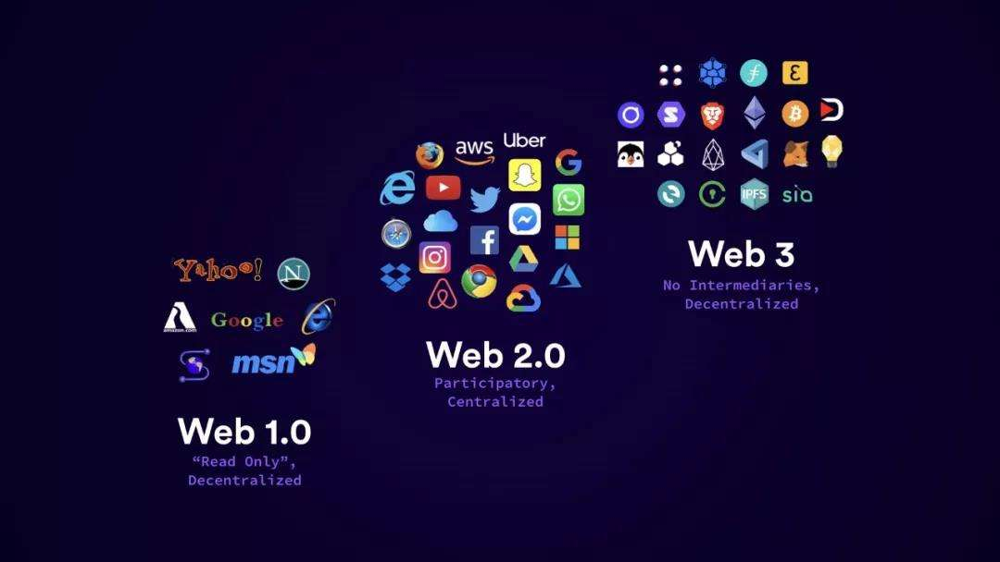
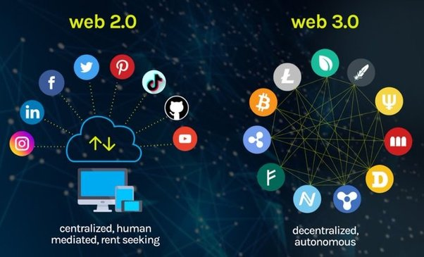

Evolution of the web
Web3.js is a JavaScript library that communicates over an Ethereum node. It may be the live chain or a locally deployed Ethereum network. It can be used to access data or information about tokens and the ether coin.
It can also be used to deploy and set up personal softwares/applications.This library enables you to connect your JavaScript-based frontend to the Ethereum network using HTTP, IPC, and WebSockets.
Web3 embraces decentralization and is being built, operated, and owned by its users. Web3 puts power in the hands of individuals rather than corporations.
The web3.js library is a collection of modules that contain functionality for the ethereum ecosystem.
- web3-eth is for the ethereum blockchain and smart contracts.
- web3-shh is for the whisper protocol, to communicate p2p and broadcast.
- web3-bzz is for the swarm protocol, the decentralized file storage.
- web3-utils contains useful helper functions for Dapp developers.
Web3 is the next generation of the World Wide Web. The internet today is built on the client-server model in which the data is hosted on a remote server,
which the client – a user – accesses. Web3, on the other hand, uses the peer-to-peer model like the early days of the internet.
Peer-to-peer networks have no centralized authorities and work in a decentralized manner. Web3 is a decentralized computing network that uses a blockchain data structure to store information.
Blockchain technology and decentralized networks will be more widely used as more people use Web3.
Web2 is the current version of the web with which we are familiar, ir refers to the version ofnthe internet known to most of us today
It refers to the web that allowed users to not only consume content from the web but also write to it. The era of content creation, with the likes of Facebook, Twitter, and Instagram being the most widely used tools.
Web2 has even brought, “content creation”
Web3 in the Ethereum context refers to decentralized web/apps majorly built on Blockchain technology.
It is the future of the internet. It is the era where users can not only read and write content but also have a say in ownership.
Now promoted as the fate of the web this blockchain based web incorprates digital currencies, NFTs, DAOs, and decentralized money where people have
a minetary stake in and more command over the web network they have s place with, offering a read/compoe/own rendition of the web.

Web2 vs Web3
Web3 is an umbrella term for the blockchain space, and the blockchain itself is the technology. Web3 is built on top of the blockchain, the core technology that powers it. Cryptocurrency is a facility that enables the exchange of value in Web3.
You can represent the value—even though not in its entirety a system provides in Web3 by using a cryptocurrency. A cryptocurrency, which can be created by organisations and protocols, represents the value that a system provides.
For example, the value of USDC, a stablecoin, was created by the Centre Consortium by providing USD in the bank and giving users USDC as a representation. Matic is a cryptocurrency that belongs to a protocol called Polygon, which offers scaling services
to blockchain technology and it represents the value Polygon is providing to the world.
Since Web3.js is a JavaScript library, you can include it in your webpages or in any JS-based framework. To test the functionality, we’re going to run it on a Node.js client.
Install Web3.js using this command:
pure js: link the dist/web3.min.js
After that you need to create a web3 instance and set a provider.
Most Ethereum-supported browsers like MetaMask have an EIP-1193 compliant provider available at window.ethereum
For web3.js, check Web3.givenProvider
If this property is null you should connect to a remote/local node.
After installing Web3.js, open your Node console and load it in a variable:
// In Node.js use: const Web3 = require('web3');
const web3 = new Web3(Web3.givenProvider || "ws://localhost:8545");
Now, let’s check what this variable holds:
That’s it! now you can use the web3 object.
Smart contracts are the byte codes written in Solidity language and compiled on Ethereum Virtual Machines (EVM). Due to these smart contracts, Ethereum allows external apps to build and run on its network.
Also known as Web3 contracts, are crucial in today’s blockchain ecosystem. They enable users to interact online via the blockchain and the many dapps in the Web3 realm, once deployed they can not have their codes directly modified abd are coded to perform specific purposes. Further,
they set the conditions for decentralized transactions without needing a centralized third-party authority for verification. In other words, Web3 contracts govern the rules of any Web3 agreement.
Concepts of this include decentralized financial services (particularly in DeFi protocols), decentralized digital identity, creating NFTs (Non-fungible Tokens) and building DAOs (decentralized autonomous organizations.
DeFi also known as the crypto's way of Wall Street. DeFi dapps let you swap, invest, earn, lend, borrow and insure financial assets directly with others users
without a middleman.
Also known as Non-fungigible tokens are digital collectibles and other online files that can be bought ans sold with cruptocurrency.
They let us tokenise things like art, collectibles even reat estate. They can only have one official owner at a time and they're secured by the Ethereum blockchain
Non-fungible is a term used to describe things are not interchangeable for other items because they have unique properties. Web3 has helped along by the rise of NFTs
DAO stands for Decentralized autonomous organization, it is a name given for a collective of online crypto supportes
who assemble together collectively in a group groverned by blochains and tokens.
It allows you co-ordinate decentralized ownership of a platform and make decisions about its future.
Documentation in this page is taken from moralis